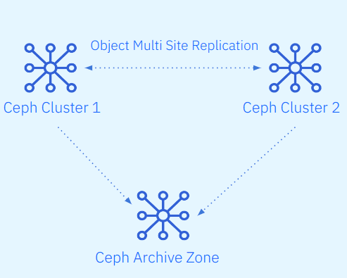
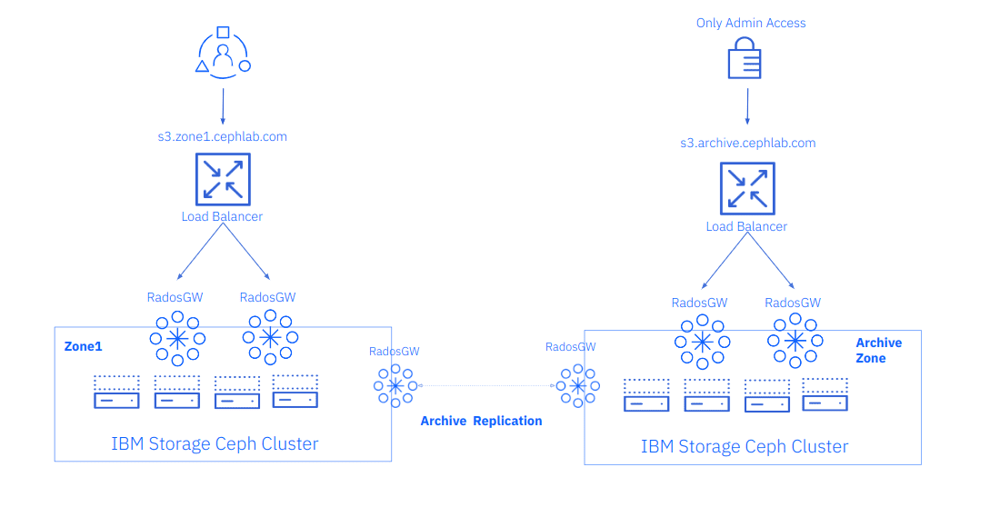
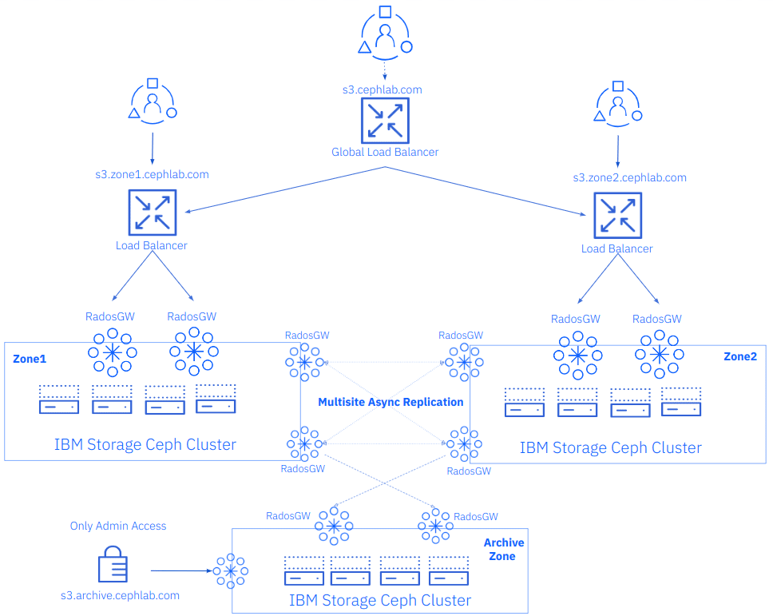

Ceph Object Storage Multisite Replication Series. Part Seven
IBM Storage Ceph Object Storage Multisite Replication Series Part Seven: the Archive Zone ¶
In part seven of this Ceph Multisite series, we introduce Archive Zone concepts and architecture. We will share a hands-on example of attaching an archive zone to a running Ceph Object Multisite cluster.
Introduction ¶
Archive your critical object data residing on Ceph using the Archive Zone feature.
The Archive Zone uses the multisite replication and S3 object versioning features. In this way, it will keep all versions of each object available even when deleted from the production site.
With the archive zone, you can have object immutability without the overhead of enabling object versioning in your production zones, saving the space that the replicas of the versioned S3 objects would consume in non-archive zones, which may well deployed on faster yet more expensive storage devices.

This can protect your data against logical or physical errors. It can save users from logical failures, for example, accidental deletion of a bucket in a production zone. It can protect your data from massive hardware failures or complete production site failure.
As the archive zone provides an immutable copy of your production data, it can serve as a key component of a ransomware protection strategy.
You can control the storage space usage of an archive zone through lifecycle policies of the production buckets, where you can define the number of versions you would like to keep for an object.
We can select on a per-bucket basis the data to send/replicate to the archive zone. If for example, we have pre-production buckets that don’t have any valuable data we can disable the archive zone replication on those buckets.
Archive Zone Architecture ¶
The archive zone as a zone in a multisite zonegroup can have a different setup than production zones, including its own set of pools and replication rules.
Ceph archive zones have the following main characteristics:
- Versioning is enabled in all buckets in the RGW archive zone
- Every time a user uploads a new object, that object is asynchronously replicated to the archive zone.
- A new object version is generated in the archive zone for each object modification in the production zone.
- We provide immutability because so that if an object is deleted in the production zone, the object is preserved intact in the archive zone. But it is essential to note that the archive zone does not lock the objects it ingests. The objects are deletable in the archive zone if the user has access to the S3 endpoint with the appropriate permissions.
The archive zone S3 endpoint for data recovery can be configured on a private network that is only accessible to the operations administrator team. If recovery of a production object is required, the request would need to go through that team.
We can add an archive zone to a Ceph Object Storage single site configuration. With this configuration, we can attach the archive zone to the running single zone, single Ceph cluster, as depicted in the following figure:

Or we can attach our archive zone to a Ceph Object Storage multisite configuration. If, for example, we haved a realm/zonegroup replicating between two zones, we can add a third zone representing a third Ceph cluster. This is the architecture that we are going to use in our example, building on our work in the previous posts where we setup an Ceph Multisite replication cluster. We are now going to add a third zone to our zonegroup configured as an immutable archive zone. An example of this architecture is shown in the following diagram.

Let’s start with our archive zone configuration. We have a freshly deployed third Ceph cluster running on four nodes named ceph-node-[08-11].cephlab.com.
[root@ceph-node-08 ~]# ceph orch host ls
HOST ADDR LABELS STATUS
ceph-node-08.cephlab.com ceph-node-08 _admin,osd,mon,mgr,rgwsync
ceph-node-09.cephlab.com 192.168.122.135 osd,mon,mgr,rgwsync
ceph-node-10.cephlab.com 192.168.122.204 osd,mon,mgr,rgw
ceph-node-11.cephlab.com 192.168.122.194 osd,rgw
4 hosts in cluster
The archive zone is not currently configurable using the Manager rgw module, so we must run radosgw-admin commands to configure it. First, we pull the information from our already-deployed multisite realm. We use the zonegroup endpoint and the access and secret keys for our RGW multisite synchronization user. If you need to check the details of your sync user, you can run: radosgw-admin user info --uid sysuser-multisite.
[root@ceph-node-08]# radosgw-admin realm pull --rgw-realm=multisite --url=http://ceph-node-01.cephlab.com:8000 --access-key=X1BLKQE3VJ1QQ27ORQP4 --secret=kEam3Fq5Wgf24Ns1PZXQPdqb5CL3GlsAwpKJqRjg --default
[root@ceph-node-08]# radosgw-admin period pull --url=http://ceph-node-01.cephlab.com:8000 --access-key=X1BLKQE3VJ1QQ27ORQP4 --secret=kEam3Fq5Wgf24Ns1PZXQPdqb5CL3GlsAwpKJqRjg
Once we have pulled the realm and the period locally, our third cluster has all required realm and zonegroup configuration. If we run radosgw-admin zonegroup get, we will see all details of our current multisite setup. Moving forward we will configure a new zone named archive. We provide the list of endpoints, which are the dedicated sync RGWs that we are going to deploy on our new cluster along with the access and secret keys for the sync user, and last but not least the tier type. This flag is the one that defines that this new zone is going to be created as an archive zone.
[root@ceph-node-08]# radosgw-admin zone create --rgw-zone=archive --rgw-zonegroup=multizg --endpoints=http://ceph-node-08.cephlab.com:8000,http://ceph-node-09.cephlab.com:8000 --access-key=X1BLKQE3VJ1QQ27ORQP4 --secret=kEam3Fq5Wgf24Ns1PZXQPdqb5CL3GlsAwpKJqRjg --tier-type=archive --default
With the new zone in place, we can update the period to push our new zone config to the rest of the zones in the zone group
[root@ceph-node-08]# radosgw-admin period update --commit
Using cephadm, we deploy two RGW services that will replicate data from production zones. In this example, we use the cephadm RGW CLI instead of a spec file to showcase a different way to configure your Ceph services with cephadm. Both new RGWs that we spin up will belong to the archive zone. Using the --placement argument, we configure two RGW services that will run on ceph-node-08 and ceph-node-09, the same nodes we configured as our zone replication endpoints via our previous commands.
[root@ceph-node-08 ~]# ceph orch apply rgw multi.archive --realm=multisite --zone=archive --placement="2 ceph-node-08.cephlab.com ceph-node-09.cephlab.com" --port=8000
Scheduled rgw.multi.archive update...
We can check the RGWs have started correctly:
[root@ceph-node-08]# ceph orch ps | grep archive
[root@ceph-node-08]# ceph orch ps | grep archive
rgw.multi.archive.ceph-node-08.hratsi ceph-node-08.cephlab.com *:8000 running (10m) 10m ago 10m 80.5M - 18.2.0-131.el9cp 463bf5538482 44608611b391
rgw.multi.archive.ceph-node-09.lubyaa ceph-node-09.cephlab.com *:8000 running (10m) 10m ago 10m 80.7M - 18.2.0-131.el9cp 463bf5538482 d39dbc9b3351
Once the new RGWs spin up, the new pools for the archive zone are created for us. Remember if we want to use erasure coding for our RGW data pool, this would be the moment to create it before we enable replication from production to the archive zone. The data pool is otherwise created using the default data protection strategy replication with three copies aka R3.
[root@ceph-node-08]# ceph osd lspools | grep archive
8 archive.rgw.log
9 archive.rgw.control
10 archive.rgw.meta
11 archive.rgw.buckets.index
When we now check the sync status from one of our archive zone nodes, we see that there is currently no replication configured. This is because we are using sync policy, and there is no zonegroup sync policy configured for the archive zone:
[root@ceph-node-08]# radosgw-admin sync status --rgw-zone=archive
realm beeea955-8341-41cc-a046-46de2d5ddeb9 (multisite)
zonegroup 2761ad42-fd71-4170-87c6-74c20dd1e334 (multizg)
zone bac4e4d7-c568-4676-a64c-f375014620ae (archive)
current time 2024-02-12T17:19:24Z
zonegroup features enabled: resharding
disabled: compress-encrypted
metadata sync syncing
full sync: 0/64 shards
incremental sync: 64/64 shards
metadata is caught up with master
data sync source: 66df8c0a-c67d-4bd7-9975-bc02a549f13e (zone1)
not syncing from zone
source: 7b9273a9-eb59-413d-a465-3029664c73d7 (zone2)
not syncing from zone
Now we want to start replicating data to our archive zone, so we need to create a zone group policy. Rrecall from our previous post that we have a zonegroup policy configured to allow replication at the zonegroup level, and then we configured replication on a per-bucket basis.
In this case, we will take a different approach with the archive zone. We are going to configure unidirectional sync at the zonegroup level, and set the policy status to enabled so by default, all buckets in the zone zone1 will be replicated to the archive archive zone.
As before, to create a sync policy we need a group, a flow, and a pipe. Let's create a new zonegroup group policy called grouparchive:
[root@ceph-node-00 ~]# radosgw-admin sync group create --group-id=grouparchive --status=enabled
We are creating a “directional” (unidirectional) flow that will replicate all data from zone1 to the archive zone:
[root@ceph-node-00 ~]# radosgw-admin sync group flow create --group-id=grouparchive --flow-id=flow-archive --flow-type=directional --source-zone=zone1 --dest-zone=archive
Finally, we create a pipe where we use a * wildcard for all fields to avoid typing the full zone names. The * represents all zones configured in the flow. We could have instead entered zone1 and archive in the zone fields. The use of wildcards here helps avoid typos and generalizes the procedure.
[root@ceph-node-00 ~]# radosgw-admin sync group pipe create --group-id=grouparchive --pipe-id=pipe-archive --source-zones='*' --source-bucket='*' --dest-zones='*' --dest-bucket='*'
Zonegroup sync policies always need to be committed:
[root@ceph-node-00 ~]# radosgw-admin period update --commit
When we check the configured zonegroup policies, we now see two groups, group1 from our previous blog posts and grouparchive that we created and configured just now:
[root@ceph-node-00 ~]# radosgw-admin sync group get
[
{
"key": "group1",
"val": {
"id": "group1",
"data_flow": {
"symmetrical": [
{
"id": "flow-mirror",
"zones": [
"zone1",
"zone2"
]
}
]
},
"pipes": [
{
"id": "pipe1",
"source": {
"bucket": "*",
"zones": [
"*"
]
},
"dest": {
"bucket": "*",
"zones": [
"*"
]
},
"params": {
"source": {
"filter": {
"tags": []
}
},
"dest": {},
"priority": 0,
"mode": "system",
"user": ""
}
}
],
"status": "allowed"
}
},
{
"key": "grouparchive",
"val": {
"id": "grouparchive",
"data_flow": {
"directional": [
{
"source_zone": "zone1",
"dest_zone": "archive"
}
]
},
"pipes": [
{
"id": "pipe-archive",
"source": {
"bucket": "*",
"zones": [
"*"
]
},
"dest": {
"bucket": "*",
"zones": [
"*"
]
},
"params": {
"source": {
"filter": {
"tags": []
}
},
"dest": {},
"priority": 0,
"mode": "system",
"user": ""
}
}
],
"status": "enabled"
}
}
]
When we check any bucket from zone1 (here we choose the unidrectional bucket, but it could be any other; we see that we now have a new sync policy configured with the ID pipe-archive. This comes from the zonegroup policy we just applied because this is unidirectional. We run the command from ceph-node-00 in zone1. We see only the dests field populated, with the source being zone1 and the destination being the archive zone.
[root@ceph-node-00 ~]# radosgw-admin sync info --bucket unidirectional
{
"sources": [],
"dests": [
{
"id": "pipe-archive",
"source": {
"zone": "zone1",
"bucket": "unidirectional:66df8c0a-c67d-4bd7-9975-bc02a549f13e.36430.1"
},
"dest": {
"zone": "archive",
"bucket": "unidirectional:66df8c0a-c67d-4bd7-9975-bc02a549f13e.36430.1"
},
"params": {
"source": {
"filter": {
"tags": []
}
},
"dest": {},
"priority": 0,
"mode": "system",
"user": ""
}
},
{
"id": "test-pipe1",
"source": {
"zone": "zone1",
"bucket": "unidirectional:66df8c0a-c67d-4bd7-9975-bc02a549f13e.36430.1"
},
"dest": {
"zone": "zone2",
"bucket": "unidirectional:66df8c0a-c67d-4bd7-9975-bc02a549f13e.36430.1"
},
"params": {
"source": {
"filter": {
"tags": []
}
},
"dest": {},
"priority": 0,
"mode": "system",
"user": "user1"
}
},
When we run the radosgw-admin sync status command again, we see that the status for zone1 has changed from not syncing from zone to synchronization enabled and data is caught up with source.
[root@ceph-node-08 ~]# radosgw-admin sync status --rgw-zone=archive
realm beeea955-8341-41cc-a046-46de2d5ddeb9 (multisite)
zonegroup 2761ad42-fd71-4170-87c6-74c20dd1e334 (multizg)
zone bac4e4d7-c568-4676-a64c-f375014620ae (archive)
current time 2024-02-12T17:09:26Z
zonegroup features enabled: resharding
disabled: compress-encrypted
metadata sync syncing
full sync: 0/64 shards
incremental sync: 64/64 shards
metadata is caught up with master
data sync source: 66df8c0a-c67d-4bd7-9975-bc02a549f13e (zone1)
syncing
full sync: 0/128 shards
incremental sync: 128/128 shards
data is caught up with source
source: 7b9273a9-eb59-413d-a465-3029664c73d7 (zone2)
not syncing from zone
Now all data ingested into zone1 will be replicated to the archive zone. Withh this configuration only have to set a uniderectional flow from zone1 toarchive. If, for example, a new object is ingested inzone2, because we have a bidirectional bucket sync policy for theunidirectionalbucket, the object replication flow will be the following:zone2→zone1 → Archive.
Summary & Up Next ¶
We introduced the archive zone feature in part seven of this series. We shared a hands-on example of configuring an archive zone in a running Ceph Object multisite cluster. In the final post of this series, we will demonstrate how the Archive Zone feature can help you recover critical data from your production site.
Footnote ¶
The authors would like to thank IBM for supporting the community by facilitating our time to create these posts.